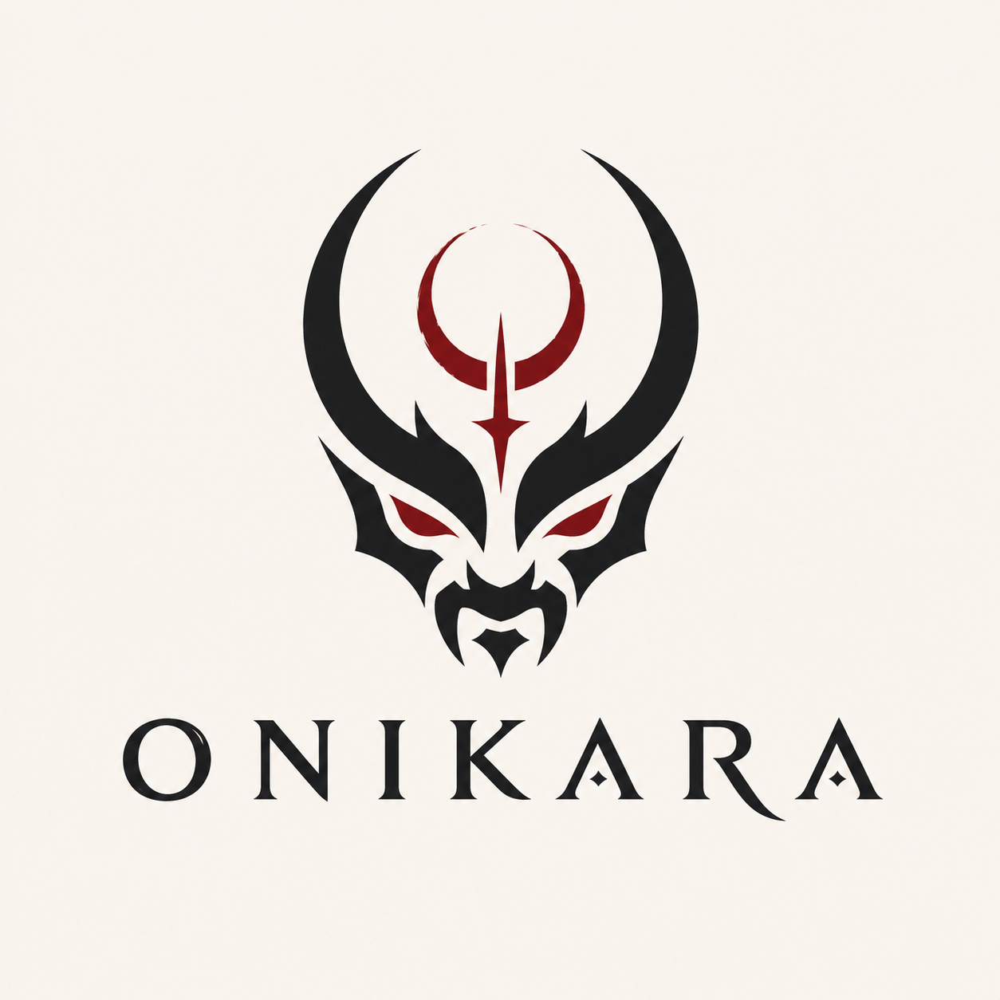

Player
Akio na Campanha X
Entrar como personagem participante, com HUD, ficha própria e missão ativa.
Selo institucional
ONIKARA
O acesso começa pelo ID/login, passa pela escolha de contexto registrado e só então abre a navegação isolada de admin, player ou master.

Fluxo de acesso
Miguel pode jogar com Akio na Campanha X e mestrar a Campanha Y. Cada escolha leva para um shell próprio, com permissões e navegação próprias.
Player
Entrar como personagem participante, com HUD, ficha própria e missão ativa.
Master
Entrar como regente da campanha, com cenas, mobs, ambiente e fichas em somente leitura.
Admin
Aparece apenas para logins com permissão administrativa da plataforma.
Aplicação do logotipo
O kit final precisa de versões transparentes para fundos claros, escuros, carmesim e dourado velho.
Fundo claro
Uso aceitável como referência provisória.
Fundo escuro
Não usar assim em produto.
Redraw tipográfico
ONIKARA
Cinzel Decorative, caixa alta, espaçamento amplo e losangos nos A.
Shell isolado
/player
Este shell não mostra controles de master nem de admin. Miguel está operando como player.
| Missão | Status | Risco |
|---|---|---|
| Rastro no Santuário | Ativa | Raro |
| Inventário | 6 itens | Estável |
Shell isolado
/master
Miguel rege a campanha, mas não possui controles globais da plataforma.
Cena: Violação do santuário sob chuva noturna
Mobs: 3 Oni menores de cinzas, 1 guardião vinculado
Mapa / Ambiente: torii quebrado, pedra alagada, zonas de sombra
| Jogador | Personagem | HP | Acesso |
|---|---|---|---|
| Miguel | Akio | 86 | Somente leitura |
| Renata | Ren | 64 | Somente leitura |
Componentes base